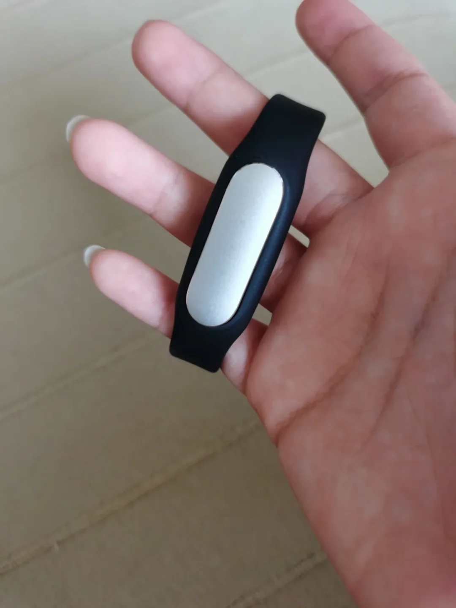

小米手环 1

79 元的国民手环，让计步与睡眠监测走进大众市场。
客观评测
小米手环 1 硬件极简：ADI 重力加速度传感器加 Dialog 低功耗蓝牙芯片，45mAh 电池实测续航可达一个月左右，IP67 防水应对洗手淋雨无压力。它只做三件事——计步、睡眠监测、来电提醒：走路等规律运动下计步误差约 5% 至 10%，睡眠深浅判定则相当粗糙。以 79 元的上市价衡量，数据准确度与稳定性完全达标，但没有屏幕、没有心率，传感器配置停留在最基础的水平。
主观点评
它更像一枚轻盈的电子饰品，戴上后几乎感觉不到存在，也从不为电量焦虑。每天早上看一眼手机里跳动的步数，是很多人第一次对自己的身体产生量化认知。今天回看，它功能简陋、体验原始，却用不可思议的价格把智能穿戴从极客玩具变成了大众日用品，这份开创意义远超参数本身。
优点与不足
- 79 元定价彻底拉低穿戴门槛，性价比惊人
- 续航长达一个月，几乎忘记充电
- 轻若无物，睡眠佩戴毫无负担
- 没有屏幕，所有数据都要掏手机查看
- 仅有加速度计，计步与睡眠监测都比较粗糙
- 腕带扣具偏松，米粒容易意外脱落丢失
参数规格
| 屏幕 | 无显示屏，3 颗白色 LED 指示灯 |
|---|---|
| 处理器 | Dialog 低功耗蓝牙芯片 |
| 传感器 | ADI 重力加速度传感器 |
| 防水 | IP67 防尘防水 |
| 电池 | 45mAh 锂聚合物电池，续航约 30 天 |
| 充电 | 专用磁吸式充电底座，约 2 小时充满 |
| 连接 | 蓝牙 4.0 BLE |
| 系统 | MIUI 运动健康（后并入小米运动 App） |
| 兼容性 | Android 4.4 及以上，后续支持 iOS |
| 重量 | 约 5g（米粒主体，不含腕带） |
| 腕带 | TPU 材质，黑、橙、绿、蓝、紫多色可选 |